농산물품질관리사-1차 (2013-05-25 기출문제)
1과목: 관계 법령
1. 농수산물품질관리법상 용어의 정의에 관한 설명으로 옳지 않은 것은?
- “물류표준화”란 농수산물의 운송 등 물류의 각 단계에서 사용되는 기기 등을 규격화하여 호환성과 연계성을 원활히 하는 것을 말한다.
- “지리적표시”란 농수산물 또는 농수산가공품의 명성ㆍ품질, 그 밖의 특징이 본질적으로 특정지역의 지리적 특성에 기인하는 경우 해당 농수산물 또는 농수산가공품이 그 특정 지역에서 생산ㆍ제조 및 가공되었음을 나타내는 표시를 말한다.
- “농수산물”이란 농산물ㆍ축산물 및 수산물과 그 가공품을 말한다.
- “이력추적관리”란 농수산물(축산물 제외)의 안전성 등에 문제가 발생할 경우 해당 농수산물을 추적하여 원인을 규명하고 필요한 조치를 할 수 있도록 농수산물의 생산단계부터 판매단계까지 각 단계별로 정보를 기록ㆍ관리하는 것을 말한다.
(정답률: 알수없음)

2. 농수산물품질관리법령상 국립농산물품질관리원장이 농산물우수관리인증기관 지정서를 발급한 경우 관보에 고시해야 하는 사항이 아닌 것은?
- 우수관리시설의 지정번호
- 유효기간
- 인증지역
- 우수관리인증기관의 명칭 및 대표자
(정답률: 알수없음)
3. 농수산물의 원산지 표시에 관한 법령상 식품접객업소에서 원산지 표시를 해야 할 대상이 아닌 것은?
- 오리고기의 포장육
- 닭고기의 식육
- 탕용으로 제공하는 배추김치
- 쌀국수
(정답률: 알수없음)
4. 농수산물품질관리법상 농산물 검사ㆍ검정과 관련하여 금지되는 행위가 아닌 것은?
- 거짓으로 검사를 받는 행위
- 검사를 받아야 하는 농수산물에 대하여 검사를 받지 아니하는 행위
- 검사 받은 농산물에 대한 검사결과를 표시하는 행위
- 검정 결과에 대하여 과대광고를 하는 행위
(정답률: 알수없음)
5. 농수산물품질관리법령상 농산물검사기관의 지정기준에 관한 설명으로 옳은 것은?
- 국산농산물 곡류 중 조곡의 포장물인 경우 검사 장소 6개소당 검사인력 최소 3명을 확보하여야 한다.
- 검사에 필요한 기본 검사장비와 종류별 검사장비 중 검사대행 품목에 해당하는 장비를 갖추어야 한다.
- 검사견본의 계측 및 분석 등을 위하여 검사 현장을 관할하는 사무소별로 5 m2 이상의 검정실이 설치되어야 한다.
- 수입농산물의 경우 항구지 1개소당 검사인력 최소 2명을 확보하여야 한다.
(정답률: 알수없음)
6. 농수산물품질관리법상 지리적표시품 표시방법 위반으로 시정명령을 받고도 그 처분에 따르지 아니한 자에 대한 벌칙기준은?
- 1년 이하의 징역 또는 2천만원 이하의 벌금
- 2천만원 이하의 과태료
- 3년 이하의 징역 또는 3천만원 이하의 벌금
- 1천만원 이하의 과태료
(정답률: 알수없음)
7. 농수산물품질관리법령상 과태료 부과기준에 관한 설명으로 옳은 것은?
- 위반행위의 횟수에 따른 과태료의 기준은 최근 2년간 같은 유형의 위반행위로 처분 받은 경우에 적용한다.
- 위반행위가 둘 이상인 경우로서 그에 해당하는 각각의 처분기준이 다른 경우에는 그 중 무거운 처분기준에 따른다.
- 부과권자는 위반 행위가 경미한 과실로 인정될 경우 과태료 금액을 3분의 1의 범위에서 경감한다.
- 이력추적관리 등록을 한 생산자가 우편 판매를 하면서 이력추적관리기준을 지키지 않으면 50만원의 과태료를 부과한다.
(정답률: 알수없음)
8. 농수산물품질관리법령상 우수관리인증기관이 1회 위반시 지정취소가 되는 경우로만 묶인 것은?
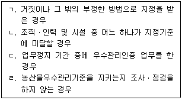
- ㄱ, ㄷ
- ㄱ, ㄹ
- ㄴ, ㄷ, ㄹ
- ㄴ, ㄹ
(정답률: 100%)
9. 농수산물품질관리법령상 농산물품질관리사에 관한 설명으로 옳지 않은 것은?
- 업무에는 포장농산물의 표시사항 준수에 관한 지도가 있다.
- 자격증 발급은 위임을 받은 국립농산물품질관리원장이 한다.
- 농산물의 품질 향상과 유통의 효율화를 촉진하여 생산자와 소비자 모두에게 이익이 될 수 있도록 신의와 성실로써 그 직무를 수행하여야 한다.
- 자격이 취소된 날부터 3년이 지나지 아니한 사람은 농산물품질관리사 자격시험에 응시하지 못한다.
(정답률: 알수없음)
10. 농수산물품질관리법령상 표준규격품을 출하하는 자가 표준규격품임을 표시할 때 해당 물품의 포장 겉면에 “표준규격품”이라는 문구와 함께 표시해야 하는 사항이 아닌 것은?
- 품목
- 포장치수
- 산지
- 등급
(정답률: 100%)
11. 농수산물품질관리법령상 농수산물 명예감시원의 임무가 아닌 것은?
- 농수산물의 표준규격화에 관한 지도
- 원산지 표시에 관한 지도
- 유기가공식품 인증에 관한 지도
- 농수산물 이력추적관리에 관한 지도
(정답률: 알수없음)
12. 농수산물의 원산지 표시에 관한 법령상 농산물의 가공품에 대한 원산지 표시기준으로 옳지 않은 것은?
- 원산지가 다른 동일 원료를 혼합하여 사용한 경우에는 혼합 비율이 높은 순서로 2개 국가(지역 등) 까지의 원료 원산지와 그 혼합 비율을 각각 표시한다.
- 사용된 원료(물, 식품첨가물 및 당류는 제외)의 원산지가 모두 국산일 경우에는 원산지를 일괄하여 “국산” 이나 “국내산”으로 표시할 수 있다.
- 원산지가 다른 동일 원료의 원산지별 혼합 비율이 변경된 경우로서 그 어느 하나의 변경의 폭이 최대 15 % 이하이면 종전의 원산지별 혼합 비율이 표시된 포장재를 혼합 비율이 변경된 날부터 1년의 범위에서 사용할 수 있다.
- 특정원료의 원산지나 혼합 비율이 최근 5년 이내에 연평균 2개국(회) 이상 변경된 경우에는 농림수산식품부장관(농림축산식품부장관)이 정하여 고시하는 바에 따라 원산지만 표시할 수 있다.
(정답률: 알수없음)
13. 농수산물품질관리법령상 농산물 표준규격에서 등급규격을 정할 때 고려해야 하는 사항이 아닌 것은?
- 색깔
- 안전성
- 크기
- 신선도
(정답률: 알수없음)
14. 농수산물의 원산지 표시에 관한 법령상 통신판매의 원산지 표시방법으로 옳지 않은 것은?
- 인쇄매체를 이용(신문 등)할 경우 글자색은 제품명 또는 가격표시와 다른 색으로 한다.
- 일반적인 표시는 원산지가 같은 경우 일괄하여 표시할 수 있다.
- 전자매체를 이용하여 글자로 표시할 수 없는 경우(라디오 등) 1회당 원산지를 두 번 이상 말로 표시하여야 한다.
- 전자매체를 이용하여 글자로 표시할 수 있는 경우(인터넷 등) 글자 크기는 제품명 또는 가격표시와 같거나 그보다 커야 한다.
(정답률: 80%)
15. 농수산물품질관리법령상 농림수산식품부장관(농림축산식품부장관)의 권한을 국립농산물품질관리원장에게 위임하지 않은 것은?(오류 신고가 접수된 문제입니다. 반드시 정답과 해설을 확인하시기 바랍니다.)
- 농산물우수관리시설의 지정
- 농산물우수관리인증기관의 지정
- 농산물품질관리사의 자격 취소
- 농산물품질관리사 자격시험의 실시계획 수립
(정답률: 알수없음)
16. 농수산물품질관리법상 우수관리인증의 유효기간에 관한 내용이다. ( )안에 들어갈 내용으로 옳은 것은?
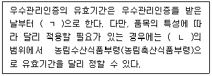
- ㄱ: 2년 ㄴ: 10년
- ㄱ: 3년 ㄴ: 15년
- ㄱ: 4년 ㄴ: 10년
- ㄱ: 4년 ㄴ: 15년
(정답률: 알수없음)
17. 농수산물 유통 및 가격안정에 관한 법령상 농수산물공판장을 개설ㆍ운영할 수 없는 자는?
- 도매시장관리공사
- 농어업경영체 육성 및 지원에 관한 법률에 따른 농업회사법인
- 농업협동조합법에 따른 농협경제지주회사의 자회사
- 지역농업협동조합
(정답률: 알수없음)
18. 농수산물 유통 및 가격안정에 관한 법률 제5조 농업관측에 관한 내용이다. ( )안에 들어갈 내용으로 옳은 것은?
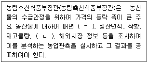
- ㄱ: 가격정보 ㄴ: 출하분석
- ㄱ: 파종면적 ㄴ: 유통마진
- ㄱ: 기상정보 ㄴ: 소비동향
- ㄱ: 가격정보 ㄴ: 소비동향
(정답률: 알수없음)
19. 농수산물 유통 및 가격안정에 관한 법령상 가격예시에 관한 설명으로 옳은 것은?
- 농림수산식품부장관(농림축산식품부장관)이 예시가격을 결정할 때에는 해당 농산물의 농업관측, 예상 경영비, 지역별 예상 생산량 및 예상 수급상황 등을 고려하여야 한다.
- 농림수산식품부장관(농림축산식품부장관)은 주요 농산물의 수급조절과 가격안정을 위하여 해당 농산물의 수확기 이전에 하한가격을 예시하여야 한다.
- 농림수산식품부장관(농림축산식품부장관)은 예시가격을 결정하고 기획재정부장관에게 보고하여야 한다.
- 농림수산식품부장관(농림축산식품부장관)이 가격을 예시한 후 예시가격을 지지하기 위해 해당 농산물을 몰수 하여야 한다.
(정답률: 알수없음)
20. 농수산물 유통 및 가격안정에 관한 법령상 농수산물도매시장 개설 등에 관한 설명으로 옳지 않은 것은?(오류 신고가 접수된 문제입니다. 반드시 정답과 해설을 확인하시기 바랍니다.)
- 도매시장의 명칭에는 그 도매시장을 개설한 지방자치단체의 명칭이 포함되어야 한다.
- 인천광역시가 도매시장을 폐쇄하는 경우에는 그 3개월 전에 이를 공고하여야 한다.
- 평택시가 지방도매시장을 개설하려면 경기도지사의 허가를 받아야 한다.
- 광주광역시가 중앙도매시장을 개설하려면 농림수산식품부장관(농림축산식품부장관)의 허가를 받아야 한다.
(정답률: 알수없음)
21. 농수산물 유통 및 가격안정에 관한 법령상 위탁수수료의 최고한도가 거래금액의 1천분의 20인 부류는?
- 청과
- 양곡
- 화훼
- 약용작물
(정답률: 알수없음)
22. 농수산물 유통 및 가격안정에 관한 법령상 주산지 등에 관한 설명으로 옳은 것은?
- 경기도지사가 주산지를 지정하였을 때에는 이를 고시하고 농림수산식품부장관(농림축산식품부장관)에게 승인을 받아야 한다.
- 주산지의 지정요건은 주요 농산물의 판매금액이 농림수산식품부장관(농림축산식품부장관)이 고시하는 금액 이상이어야 한다.
- 경기도지사는 주산지 지정에 필요한 주요 농산물의 품목을 지정하였을 때에는 이를 고시하여야 한다.
- 경기도지사는 지정된 주산지가 지정요건에 적합하지 아니하게 되었을 때에는 그 지정을 변경하거나 해제 할 수 있다.
(정답률: 알수없음)
23. 농수산물 유통 및 가격안정에 관한 법령상 도매시장법인의 직접 대금결제에 관한 내용이다. ( )안에 들어갈 내용으로 옳은 것은?
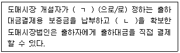
- ㄱ: 운영조례 ㄴ: 판매대금
- ㄱ: 운전자금 ㄴ: 판매대금
- ㄱ: 업무규정 ㄴ: 운전자금
- ㄱ: 출하약정 ㄴ: 운전자금
(정답률: 알수없음)
24. 농수산물 유통 및 가격안정에 관한 법률 시행규칙 제42조 창고경매 및 포전경매에 관한 내용이다. ( )안에 들어갈 내용으로 옳은 것은?
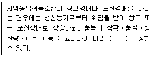
- ㄱ: 시중가격 ㄴ: 예정가격
- ㄱ: 생산단체 ㄴ: 경매가격
- ㄱ: 경락가격 ㄴ: 경매가격
- ㄱ: 생산단체 ㄴ: 예정가격
(정답률: 알수없음)
25. 농수산물 유통 및 가격안정에 관한 법령상 표준정산서에 포함되어야 할 사항이 아닌 것은?
- 출하자명
- 담당경매사
- 판매대금 총액 및 매수인
- 정산금액
(정답률: 알수없음)
2과목: 원예작물학
26. 육묘에 관한 설명으로 옳지 않은 것은?
- 육묘용 상토에는 버미큘라이트, 펄라이트, 피트모스 등이 사용된다.
- 공정육묘에 이용되는 플러그 트레이 셀의 수는 72, 162, 288 등 다양하다.
- 지피포트는 플라스틱을 원료로 하여 만든 것으로 통기성이 떨어진다.
- 육묘는 직파에 비해 발아율을 향상시킨다.
(정답률: 알수없음)
27. ( )안에 들어갈 내용을 순서대로 나열한 것은?
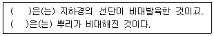
- 고구마, 감자
- 감자, 고구마
- 고구마, 생강
- 감자, 토란
(정답률: 알수없음)
28. 다음에서 인경채류를 모두 고른 것은?
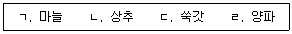
- ㄱ, ㄴ
- ㄱ, ㄹ
- ㄴ, ㄷ
- ㄷ, ㄹ
(정답률: 알수없음)
29. 오이에서 쓴맛이 느껴지는 이유는?
- 암꽃 수 증가로 지베렐린 생성
- 질소비료 과잉으로 아질산태 화합물 생성
- 토양수분 부족으로 알칼로이드 화합물 생성
- 밀식재배로 에틸렌 생성
(정답률: 알수없음)
30. 채소류의 병충해에 관한 설명으로 옳지 않은 것은?
- 토마토는 뿌리혹선충 피해를 받으면 뿌리생육이 나빠지고 잎이 황화된다.
- 오이의 노균병은 기온이 20 ~ 25 ℃, 다습한 상태일 때 많이 발생한다.
- 고추의 역병은 차먼지응애에 의해 발생하고 과실은 무름병에 걸려 썩는다.
- 배추는 뿌리혹병에 걸리면 뿌리에 혹이 형성되고 수분과 영양분 이동이 억제된다.
(정답률: 알수없음)
31. 새싹채소에 관한 설명으로 옳지 않은 것은?
- 재배기간이 길다.
- 무, 브로콜리 종자의 싹이 이용되고 있다.
- 기능성 성분함량이 높고 영양가도 뛰어나다.
- 이식(移植)이나 정식(定植)과정 없이 키울 수 있다.
(정답률: 알수없음)
32. 채소류의 꽃눈분화와 추대에 관한 설명으로 옳지 않은 것은?
- 양파는 단일성 식물로 5 ~ 7월에 파종하면 바로 추대ㆍ개화한다.
- 무는 종자춘화형 식물로 고온장일 조건에서 추대가 촉진된다.
- 상추는 온도감응형 식물로 고온에서 꽃눈이 분화된다.
- 당근은 녹식물 상태에서 저온에 감응하여 꽃눈이 분화된다.
(정답률: 알수없음)
33. 상품성 증진을 위해 배토(培土, 북주기, hilling) 작업이 필요한 것은?
- 당근, 딸기
- 토란, 양배추
- 감자, 대파
- 아스파라거스, 수박
(정답률: 알수없음)
34. 다음 화훼작물 중 구근류는?
- 튤립
- 스토크
- 카네이션
- 스타티스
(정답률: 알수없음)
35. 분화류의 줄기신장 억제를 위해 사용할 수 있는 방법이 아닌 것은?
- 주간온도보다 야간온도를 높인다.
- 지베렐린의 생합성억제제를 살포한다.
- 줄기의 생장점 부위를 물리적으로 자극한다.
- 적색광(red)보다 근적외광(far-red) 비율을 높인다.
(정답률: 알수없음)
36. 다음 설명의 병해와 해당 화훼작물의 연결이 옳은 것은?
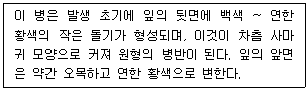
- 흰녹병 – 국화
- 흰가루병 – 거베라
- 근두암종병 – 장미
- 반점세균병 - 카네이션
(정답률: 알수없음)
37. 원예작물의 증산속도를 감소시키는 환경조건에 해당되지 않는 것은?
- 풍속 감소
- 광량 감소
- 상대습도 감소
- 지상부 온도 감소
(정답률: 알수없음)
38. 다음 중 다육식물이 아닌 것은?
- 돌나물
- 달리아
- 알로에
- 칼랑코에
(정답률: 알수없음)
39. 종자 발아에 관한 설명으로 옳지 않은 것은?
- 종피의 불투수성은 발아억제의 요인이 된다.
- 미성숙배는 발아불량의 주요한 내부 원인이다.
- 일부 종자의 발아는 빛에 민감하게 반응한다.
- 발아 도중 배유에서 녹말의 합성이 일어난다.
(정답률: 알수없음)
40. 다음과 같이 생육을 조절하는 화훼작물은?
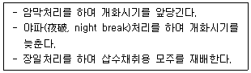
- 국화, 카네이션
- 금어초, 시클라멘
- 숙근안개초, 달리아
- 포인세티아, 칼랑코에
(정답률: 알수없음)
41. 절화의 수확시기와 채화단계에 관한 설명으로 옳은 것은?
- 절화의 수분함량은 아침보다 저녁에 수확할 때 높다.
- 절화의 탄수화물 함량은 저녁보다 아침에 수확할 때 높다.
- 여름철에는 겨울철보다 어린 단계에서 수확한다.
- 단기저장용 절화는 장기저장용보다 어린 단계에서 수확한다.
(정답률: 75%)
42. 절화수명연장제의 구성성분별 기능으로 옳지 않은 것은?
- 자당(sucrose): 영양분 공급으로 수명 연장
- 사이토카이닌(cytokinin): 노화 지연 및 잎의 황화 억제
- STS(silver thiosulfate): 에틸렌 작용 저해로 노화 억제
- HQS(8-hydroxyquinoline sulfate): 삼투압 조절로 세포신장 촉진
(정답률: 알수없음)
43. 과수 재배시 광합성 환경에 관한 설명으로 옳지 않은 것은?
- 적절한 바람은 CO2 흡수를 촉진하여 광합성 효율을 증가시킨다.
- 고온에서는 광합성과 호흡의 불균형에 의해 각종 생리장해가 발생한다.
- 온대과수는 열대과수에 비해 일반적으로 광보상점이 높은 특성을 나타낸다.
- 광포화점 이상의 광도에서는 빛에 의한 광합성 효율의 증대를 기대하기 어렵다.
(정답률: 70%)
44. 광합성 동화산물이 뿌리로 이동하는 것을 억제하여 꽃눈분화 및 과실발육을 촉진시키는 작업은?
- 뿌리전정
- 환상박피
- 솎음전정
- 순지르기
(정답률: 90%)
45. 토양개량을 위한 석회시비의 효과로 옳지 않은 것은?
- 산성토양의 중화
- 토양의 단립화(單粒化) 유도
- 토양내 양이온 용탈 억제
- 토양미생물의 활동을 유도하여 유기물의 분해 촉진
(정답률: 알수없음)
46. 인과류(仁果類, pomes)에 해당하는 과실을 모두 고른 것은?
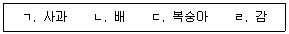
- ㄱ, ㄴ
- ㄱ, ㄷ
- ㄴ, ㄹ
- ㄷ, ㄹ
(정답률: 알수없음)
47. 엽록소를 구성하는 필수 성분으로 결핍시 엽맥 사이의 황화현상을 나타내는 원소는?
- 철
- 인산
- 구리
- 마그네슘
(정답률: 알수없음)
48. 왜성대목을 활용한 접붙이기에 관한 설명으로 옳지 않은 것은?
- 실생묘에 비해 수명이 길다.
- 결실연령을 단축시킬 수 있다.
- 토양적응력이 약하여 생리장해가 발생할 수 있다.
- 단위면적당 재식주수를 증가시켜 수량증대 효과를 꾀할 수 있다.
(정답률: 알수없음)
49. 낙엽과수의 휴면에 관한 설명으로 옳지 않은 것은?
- 내재휴면은 눈의 생리적 요건이 충족되지 않아 발생한다.
- 일정기간의 저온 요구도가 충족되어야 환경휴면이 타파된다.
- 휴면에 돌입하면 호흡이 줄어들고, 효소의 활성이 매우 낮아진다.
- 휴면 개시와 함께 ABA는 증가하고, 지베렐린과 옥신은 감소한다.
(정답률: 알수없음)
50. 과수의 해충방제를 위한 친환경적 방법이 아닌 것은?
- 봉지씌우기
- 페로몬트랩
- 천적곤충 활용
- 생장억제제 처리
(정답률: 알수없음)
3과목: 수확 후 품질관리론
51. 과실의 수확에 적합한 성숙도 판정기준으로 옳지 않은 것은?
- 경도
- 색택
- 풍미
- 중량
(정답률: 알수없음)
52. 원예산물의 품질평가 방법으로 옳지 않은 것은?
- 당도는 굴절당도계를 이용하고, °Brix로 표시한다.
- 경도는 경도계를 이용하고, Newton(N)으로 표시한다.
- 산도는 산도계를 이용하고, mmhoㆍcm-1로 표시한다.
- 과피색은 색차계를 이용하고, Hunter 'L', 'a', 'b'로 표시한다.
(정답률: 알수없음)
53. 원예산물의 맛과 관련 있는 성분이 아닌 것은?
- 과당(fructose)
- 나린진(naringin)
- 구연산(citric acid)
- 라이코펜(lycopene)
(정답률: 알수없음)
54. 원예산물의 저장 중 수분손실에 관한 설명으로 옳지 않은 것은?
- 저장온도가 낮을수록 적다.
- 저장상대습도가 높을수록 적다.
- 표피가 치밀한 작물일수록 적다.
- 용적대비 표면적이 큰 작물일수록 적다.
(정답률: 알수없음)
55. 원예산물의 비파괴 측정 선별법에 관한 설명으로 옳지 않은 것은?
- 전수조사가 어렵다.
- 선별속도가 빠르다.
- 설치ㆍ운용 비용이 높다.
- 당도 등 내부품질을 측정할 수 있다.
(정답률: 알수없음)
56. 고품질 신선편이 농산물의 생산을 위해 중점관리 해야 하는 품질저하 요인으로 거리가 먼 것은?
- 조직 연화
- 미생물 증식
- 효소적 갈변
- 영양성분 변화
(정답률: 알수없음)
57. 원예산물의 전처리 기술 중 세척에 관한 설명으로 옳지 않은 것은?
- 세척수는 음용수 기준 이상의 수질이어야 한다.
- 건식세척에는 체, 송풍, 자석, X선 등이 사용된다.
- 오존수 사용 시 작업실에는 환기시설을 갖추어야 한다.
- 분무세척법은 침지세척법에 비해 이물질 제거 효과가 낮다.
(정답률: 알수없음)
58. 에틸렌 수용체에 결합하여 에틸렌 작용을 억제시키는 화합물은?
- 1-MCP(1-methylcyclopropene)
- ABA(abscisic acid)
- 오존(O3)
- 이산화티타늄(TiO2)
(정답률: 알수없음)
59. 원예산물의 수확 후 호흡에 관한 설명으로 옳지 않은 것은?
- 호흡률과 품질변화 속도는 비례한다.
- 호흡률과 에틸렌 발생량은 반비례한다.
- 토마토, 바나나는 호흡급등형 작물이다.
- 사과의 호흡률은 만생종이 조생종보다 낮다.
(정답률: 알수없음)
60. 원예산물의 수확기준으로 옳지 않은 것은?
- 장기저장용 사과는 완숙단계에 수확한다.
- 토마토는 착색정도를 기준으로 수확한다.
- 결구상추는 결구도를 기준으로 수확한다.
- 시장출하용 수박은 완숙단계에 수확한다.
(정답률: 알수없음)
61. 과실의 숙성 중 나타나는 색 변화 요인으로 옳은 것은?
- 캡산틴 분해
- 엽록소 합성
- 안토시아닌 합성
- 카로티노이드 분해
(정답률: 알수없음)
62. 원예산물의 수확 후 호흡에 영향을 미치는 외적 요인이 아닌 것은?
- 온도
- 공기조성
- 호흡기질
- 물리적 스트레스
(정답률: 알수없음)
63. 원예산물의 연화(softening)와 관련 있는 인자로 옳게 짝지은 것은?
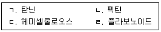
- ㄱ, ㄴ
- ㄴ, ㄷ
- ㄴ, ㄹ
- ㄷ, ㄹ
(정답률: 알수없음)
64. 원예산물 포장에 일반적으로 사용되고 있는 PP(polypropylene) 필름의 특징이 아닌 것은?
- 연신 등 가공이 쉽다.
- 방습성이 높다.
- 산소투과도가 낮다.
- 광택 및 투명성이 높다.
(정답률: 알수없음)
65. 원예산물의 예냉을 위한 냉각방식에 관한 설명으로 옳은 것은?
- 진공냉각방식은 과채류에 주로 이용된다.
- 냉풍냉각방식은 냉각속도가 늦다.
- 냉수냉각방식은 미생물 오염에 안전하다.
- 차압통풍냉각방식은 적재효율이 높다.
(정답률: 알수없음)
66. 포장된 신선편이 농산물의 이취발생과 관련이 없는 것은?
- 저산소
- 에탄올
- 저이산화탄소
- 아세트알데히드
(정답률: 알수없음)
67. 원예산물의 신선도 유지를 위한 저장관리에 관한 설명으로 옳지 않은 것은?
- 에틸렌이 축적되면 품질저하를 초래한다.
- 아열대산은 온대산에 비해 저장온도가 낮아야 한다.
- 저장고의 습도유지를 위해 바닥에 물을 뿌리거나 가습기를 이용한다.
- 저장고의 공기흐름을 원활하게 하기 위해 적재용적률은 60 % ~ 65 %로 한다.
(정답률: 알수없음)
68. 다음 원예산물 중 호흡률이 높은 것으로 옳게 짝지은 것은?
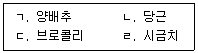
- ㄱ, ㄴ
- ㄱ, ㄹ
- ㄴ, ㄷ
- ㄷ, ㄹ
(정답률: 알수없음)
69. 원예산물의 부패에 관한 설명으로 옳지 않은 것은?
- 저온장해 발생 시 부패가 쉽다.
- 상대습도가 낮을수록 곰팡이 증식이 쉽다.
- 물리적 상처는 부패균의 감염 통로가 된다.
- 수분활성도가 높을수록 부패가 쉽다.
(정답률: 90%)
70. 원예산물의 수확 후 대사 조절 방법과 효과가 옳지 않은 것은?
- 에테폰처리: 고추의 착색억제
- 에탄올처리: 감의 탈삽촉진
- 중온열처리: 결구상추의 갈변억제
- UV처리: 포도의 레스베라트롤 함량 증가
(정답률: 알수없음)
71. 다음 중 원예산물의 화학적 위해요인은?
- 마이코톡신
- 리스테리아
- 장염비브리오
- 살모넬라
(정답률: 알수없음)
72. 사과의 밀(water core) 증상에 관한 설명으로 옳지 않은 것은?
- 유관속 주변 조직이 투명해지는 현상이다.
- 솔비톨이 축적되어 정상과에 비해 당도가 높아진다.
- 일교차가 심하거나 수확시기가 늦었을 때 나타난다.
- 장기저장 할 경우 밀 증상 부위가 갈변되고 심하면 스펀지화 된다.
(정답률: 50%)
73. 원예산물의 수확 후 관리 방법과 효과가 옳지 않은 것은?
- 예건: 딸기의 연화 억제
- 큐어링: 감자의 부패 억제
- 방사선 조사: 마늘의 맹아 억제
- 칼슘처리: 사과의 고두병 억제
(정답률: 알수없음)
74. 원예산물의 동해(freezing injury)에 관한 설명으로 옳지 않은 것은?
- 조직이 함몰되고 갈변된다.
- 물의 빙점보다 낮은 온도에서 발생한다.
- 세포막의 지질 유동성 변화가 주 요인이다.
- 세포 외 결빙이 세포 내 결빙보다 먼저 발생한다.
(정답률: 알수없음)
75. 원예산물의 신선도를 유지하기 위한 콜드체인 시스템의 관리방법으로 옳은 것은?
- 상온저장고의 구비
- 판매진열대의 실온유지
- 냉장 컨테이너 차량의 보급
- 방습도가 낮은 포장상자 구비
(정답률: 알수없음)
4과목: 농산물유통론
76. 농산물 유통의 특성이라고 할 수 없는 것은?
- 농산물은 다품목 소량생산 특성으로 상품화가 용이하다.
- 농산물 생산은 계절적이지만 소비는 연중 발생하여 보관의 중요성이 크다.
- 농산물은 가치에 비해 부피가 크고 무거워 운반과 보관에 많은 비용이 든다.
- 농산물은 중량이나 크기, 모양이 균일하지 않기 때문에 표준화, 등급화가 어렵다.
(정답률: 알수없음)
77. 농산물 도매시장 유통주체가 아닌 것은?
- 시장도매인
- 도매물류센터
- 중도매인
- 도매시장법인
(정답률: 알수없음)
78. 유통경로상 수직적 통합과 관련된 활동이 아닌 것은？
- 농협과 조합원간 계약재배 실시
- 과일 재배농가와 과일 가공업체간 계열화
- 산지에서 유통 활동을 하는 영농법인들간의 통합
- 대형 유통업체와 생산자 조직과의 지속적인 납품관계 형성
(정답률: 70%)
79. 공동계산제의 장점으로 옳은 것은？
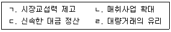
- ㄱ，ㄷ
- ㄱ, ㄹ
- ㄴ, ㄷ
- ㄴ, ㄹ
(정답률: 70%)
80. 전자상거래의 특징으로 옳지 않은 것은?
- 시장진입 장벽이 낮다.
- 생산자 주도로 거래한다．
- 고객정보의 획득이 용이하다.
- 유통경로가 오프라인(Off-line)거래에 비해 짧다.
(정답률: 알수없음)
81. 다음 중 도매상 유형에 해당되지 않는 것은?
- 대리인
- 중개인
- 제조업자 도매상
- 카테고리 킬러
(정답률: 알수없음)
82. 농산물 거래에 관한 설명으로 옳지 않은 것은?
- 도매시장에서 경매와 입찰은 전자식을 원칙으로 한다.
- 중개는 유통기구가 사전에 구매자로부터 주문을 받아 구매를 대행하는 방식이다.
- 매수는 유통기구가 출하자로부터 농산물을 구매하여 자기 책임으로 판매하는 방식이다.
- 정가ㆍ수의매매는 출하자, 도매시장법인, 중도매인이 경매 이후 상호 협의하여 거래량과 거래가격을 정하는 방식이다.
(정답률: 알수없음)
83. 농산물 유통마진에 관한 설명으로 옳은 것은？
- 부피가 크고 저장ㆍ수송이 어려울수록 낮다.
- 일반적으로 경제가 발전할수록 감소하는 경향이 있다.
- 수집단계, 도매단계, 소매단계 마진으로 구성된다.
- 소매상 구입가격에서 생산농가 수취가격을 공제한 것이다．
(정답률: 알수없음)
84. 농산물종합유통센터의 역할과 기능으로 옳지 않은 것은?
- 적정수의 매매참가인을 확보하여 거래규모를 확대한다.
- 도매 후 잔품 등을 일반 소비자에게 소매형태로 판매한다.
- 농가의 출하선택권을 확대하여 계획적 생산을 유도한다.
- 수집ㆍ분산기능 뿐만 아니라 다양한 상적ㆍ물적기능을 수행한다.
(정답률: 알수없음)
85. 다음의 농산물 산지유통과정에서 창출되는 효용을 순서대로 나열한 것은?
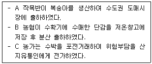
- 시간효용 - 형태효용 – 장소효용
- 장소효용 - 시간효용 – 소유효용
- 소유효용 - 장소효용 – 시간효용
- 장소효용 - 소유효용 - 형태효용
(정답률: 84%)
86. 산지 농산물 공동판매의 원칙이 아닌 것은?
- 무조건 위탁 원칙
- 총거래수 최소화 원칙
- 공동계산 원칙
- 평균판매 원칙
(정답률: 40%)
87. A 농가의 배추 생산 공급함수 Q = 3000 + 2 P, 배추가격 P = 500원 일 때 배추의 공급 탄력성은?
- 0.25
- 0.5
- 1.0
- 1.5
(정답률: 알수없음)
88. 농산물 등급화에 관한 설명으로 옳지 않은 것은?
- 가격경쟁을 촉진하고, 농산물 생산과 가격의 계절 진폭을 완화한다.
- 통일된 거래 단위를 사용하여 품질 속성의 차이를 쉽게 식별할 수 있도록 한다.
- 가격정보의 유용성을 높여줌으로써 농업인과 유통업자의 의사결정에 도움을 준다.
- 농산물 등급별 구성비의 변화는 등급별 수요 탄력성에 따라 생산자의 총소득을 변화시킨다.
(정답률: 알수없음)
89. 농산물 시세변동에 대한 위험을 회피하기 위한 대책이 아닌 것은?
- 보험가입
- 품질보증제도 도입
- 선물거래
- 농산물 생산성 증대
(정답률: 알수없음)
90. 농산물의 수요와 공급의 가격 비탄력성에 관한 설명으로 옳지 않은 것은？
- 가격변동률 만큼 수요변동률이 크지 않다.
- 가격폭등시 공급량을 쉽게 늘리기 어렵다.
- 소폭의 공급변동에는 가격변동이 크지 않다.
- 수요와 공급의 불균형 현상이 연중 또는 지역별로 발생할 수 있다.
(정답률: 30%)
91. 현재 정부가 시행하고 있는 농산물수급과 가격 안정을 위한 정책 수단이 아닌 것은?
- 생산자단체의 자조금 조성을 지원한다．
- 수매 비축 및 방출을 통해 적정가격을 유지한다．
- 유통명령을 통해 해당 품목을 산지에서 폐기한다.
- 농가소득 보전을 위해 생산과 연계되는 직불금을 지급한다．
(정답률: 알수없음)
92. 농산물 상품화 전략 수립 시 고려해야 할 요소가 아닌 것은?
- 서비스
- 디자인
- 상표
- 광고
(정답률: 알수없음)
93. 고객정보를 수집하고 분석하여 고객 이탈방지와 신규 고객확보 등에 활용하는 마케팅 기법은?
- POS (Point of Sales)
- SCM (Supply Chain Management)
- CRM (Consumer Relationship Management)
- CS (Consumer Satisfaction)
(정답률: 알수없음)
94. 제품수명주기(PLC)상 성장기에 해당되는 것은?
- 매출액 급상승
- 상품단위별 이익 최고조 도달
- 비용통제 및 광고활동 축소
- 적극적 신제품 홍보
(정답률: 알수없음)
95. 협동조합 유통사업에 관한 설명으로 옳지 않은 것은?
- 거래비용을 증가시킨다．
- 무임승차 문제를 야기할 수 있다.
- 상인의 초과이윤 발생을 억제할 수 있다.
- 공동계산제는 개별농가의 개성이 상실될 수 있다.
(정답률: 알수없음)
96. 브랜드 충성도에 관한 설명이 아닌 것은？
- 브랜드 충성도는 편견이 작용한다.
- 제조업자의 브랜드 파워가 강할수록 브랜드 충성도가 높다.
- 소비자가 특정상표에 대해 일관되게 선호하는 경향을 말한다.
- 브랜드 충성도는 상표고집, 상표인식，상표출원의 ３가지 유형이 있다.
(정답률: 55%)
97. '명품 멜론 ２개들이 한 상자에 30만원' 과 같이 고가품임을 암시하는 심리적 가격전략에 해당하는 것은?
- 원가 가산가격
- 과점가격
- 개수가격
- 수요자 지향적 가격
(정답률: 알수없음)
98. 소매업체에서 농산물을 판매할 때 경품이나 할인쿠폰 제공 등의 촉진활동 효과로 옳지 않은 것은?
- 단기적인 매출이 증가한다.
- 경쟁기업이 쉽게 모방하기 어렵다.
- 가격경쟁을 회피하여 차별화할 수 있다.
- 신상품 홍보와 잠재고객을 확보할 수 있다.
(정답률: 알수없음)
99. 농산물 유통기능 중 금융기능이 아닌 것은？
- 보험가입
- 외상거래
- 할부판매
- 선도자금
(정답률: 알수없음)
100. 우리나라 표준형 상품 바코드의 설명으로 옳은 것은?
- 국가번호는 '80'이다.
- 상품코드는 8번째부터 4자리이다.
- 유통업체 코드는 첫 번째 1자리이다.
- 제조업체 코드는 4번째부터 4자리이다.
(정답률: 50%)